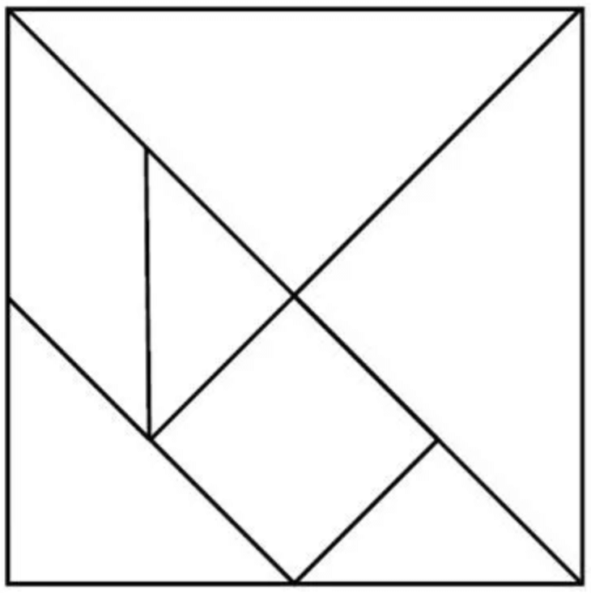

Programming, problem solving, and algorithms
CPSC 203, 2025 W1
September 4, 2025
Introductions
About me
Our amazing TAs
You?
- Turn to your neighbor and introduce yourself 👋
- Together, come up with one binary question
that you think will divide the class about in half
Examples:
* Coke or Pepsi?
* Spaghetti or Sushi?
* Morning person or Night owl?
The Flashlight Game 🔦
Rules:
- Everyone starts in play
- Each turn, a student poses a valid yes/no question
- YES = turn on your phone flashlight
- NO = keep it dark
- YES = turn on your phone flashlight
- YES people are now on vacation 🌴
(light stays off from now on — relax and enjoy!)
A question is valid if it puts at least 5 and no more than half of the current group on vacation.
End of Game: * We stop when 10 or fewer people remain in play * Everyone else is happily on vacation 🌴
How to Count
- I only need to count the lights (YES)
- The rest (dark screens) = NO
- Eliminated = never light up again
Start w 150 (say) pose question 1, 5 <= k1 <= 150/2 lights -> 150-k1 remain. pose 2, 5 <= k2 lights <= (150-k1)/2 -> 150-k1-k2 remain. pose question 3, 5 <= k3 <= (150-k1-k2)/2 -> 150-k1-k2-k3 remain. etc.
Debrief 💡
Punchline questions:
We know we will need at least \({\hline{12em}}\) questions.
We know we will need no more than \({\hline{12em}}\) questions.
Why did we stop at 10 instead of 1?
Why did we do this?
Where to start?
Course Website: https://ubc-cs.github.io/cpsc203/ Canvas: https://canvas.ubc.ca/courses/170624
The stages of skill mastery: acquiring skills, practicing and integrating skills, and knowing when to apply skills.
About This Course
This course will teach you a bajillion different things!
- Tools: Terminal, Markdown, Git, Visual Studio Code, PrairieLearn
- Computer science: Python (!!!), efficiency, web scraping, graphs
- Data science: pandas, data frames, visualizations
- Algorithms: many algorithms!
- Art and creativity: lots of examples!
Course Designer – Dr. Cinda Heeren!
Teaching Professor, at UBC since 2017 (previously at University of Illinois Urbana-Champaign).
Teaches mid-level required courses for CS specializations (mostly CPSC 221) & a similar course for non-majors!

Course Components
Lectures: in-class activities based on problem solving and design.
Labs: practice on lecture material
Problems of the day (POTD): one per (week)day, 5/week, ~ 50 / term
Projects: 3 total
Assessments: 5 tests (examlets) + final
Passing Requirements
You must satisfy ALL conditions to pass the course:
- Earn a grade of at least 50% in the Lab component.
- Achieve a minimum grade of 50% in both the Test and Exam components combined.
- Pass the Final Exam with a minimum grade of 50%.
If students do not satisfy the appropriate requirements, the student will be assigned the lower of their earned course grade or a maximum overall grade of 45 in the course.
Evaluation
| Item | Weight | Due date(s) |
|---|---|---|
| Problems of the Week | 25% (10 x 2.5%) | Fridays at 6 PM |
| Labs | 5% (10 x 0.5%) | Fridays at 6 PM |
| Programming Projects | 15% (3 x 5%) | Three in the term |
| Tests (Examlets) | 40% (5 x 8%) | ~ Bi-weekly |
| Final Exam | 30% | TBD |
Semester overview
| Handcraft | Billboard Hot 100 | The Overstory and Pointillism | Artificial Music Composition | Road Trip Planning | Spiderman’s Social Network |
|---|---|---|---|---|---|
Design Objects Iteration |
Web Scraping Data Frames MatPlotLib |
Voronoi Diagrams Efficiency |
Markov Chains Random Numbers Graphs |
Traveling Salesperson Intractable Problems |
Natural Language |
This course consists of a sequence of six explorations, assembled to provide a tour through data structure applications and algorithmic design. Built around topics from arts, sciences, and technology, the explorations are thought provoking and engaging. You will emerge from the course with increased proficiency in Python programming, and with a broad spectrum of tools for algorithmic problem solving.
Course Tools
Ed Discussion: class discussion forum
PrairieLearn: platform to help us give you feedback on work you do!
GitHub: code repository and version control
Visual Studio Code: developer environment
Canvas: basically just a place for you to find all the relevant links to things…
Any questions before we continue?
Break
05:00
Tangrams


Define a small working group of size up to 4.
One of you share: https://mathigon.org/tangram
Solve as many as you’d like, together
Speculate together on why you’re doing this!!
10:00
Let’s learn
20:00
20:00